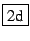
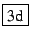

ΥπΦύλλο -> Νέο υπολογιστικό φύλλο ή πληκτρολογούμε Alt+T.
Εμφανίζεται ένα νέο υπολογιστικό φύλλο μαζί με το πλαίσιο ρυθμίσεων
όπου μπορούμε: (α) να αλλάξουμε
τον αριθμό των γραμμών/στηλών του πίνακα, (β) να ελέγξουμε την εμφάνιση/απόκρυψη του
2Δ παραθύρου οπτικοποίησης που είναι συνημμένο με αυτόν τον πίνακα,
και (γ) να ορίσουμε το όνομα μιας μεταβλητής την οποία
μπορούμε να χρησιμοποιήσουμε για να πάρουμε τιμές του πίνακα
από γραμμές εντολών εκτός του υπολογιστικού φύλλου
(χρησιμοποιώντας τον συμβολισμό πινάκων. Για παράδειγμα,
αν στην μεταβλητή δώσουμε το όνομα var, τότε η εντολή
var[1,2] εκτός του υπολογιστικού φύλλου
θα επιστρέψει την τιμή του κελιού στη γραμμή 2, στήλη 3,
σύμφωνα με την σύνταξη του Xcas).
Ο αριθμός των γραμμών και των στηλών με τις οποίες θα ανοίγει κάθε καινούργιο υπολογιστικό φύλλο ρυθμίζεται από το πλαίσιο διαλόγου που ανοίγει με την επιλογή Ρυθμίσεις -> Γενικές Ρυθμίσεις, της γραμμής των βασικών μενού.
Αργότερα μπορούμε και πάλι να τροποποιήσουμε τις ρυθμίσεις του υπολογιστικού φύλλου
είτε πατώντας το κουμπί ρυθμίσεών του Sheet config, που βρίσκεται πάνω από
τα κελιά είτε από το υπομενού
Επεξ -> Ρυθμίσεις του υπολογιστικού φύλλου.
Αν στις ρυθμίσεις έχουμε επιλέξει να φαίνεται το 2Δ παράθυρο μέσα στο
υπολογιστικό φύλλο,
θα εμφανισθούν δυναμικά όλα τα κελιά που αποτιμούνται σε ένα γραφικό αντικείμενο.
Επίσης μπορούμε να εμφανίσουμε όλα τα γραφικά αντικείμενα ενός υπολογιστικού
φύλλου σε ένα ξεχωριστό παράθυρο, είτε σε δισδιάστατη είτε σε τρισδιάστατη μορφή
πατώντας το
 ή
 στα δεξιά της γραμμής των μενού του υπολογιστικού φύλλου.
Ένα κελί μπορεί να περιέχει μια προκαθορισμένη τιμή
(οποιοδήποτε έγκυρο αντικείμενο του Xcas: ακέραιο, πραγματικό, σύμβολα,
αλγεβρικά αντικείμενα, συμβολοσειρά, ...) ή έναν τύπο εξαρτώμενο από άλλα
κελιά. Η σύνταξη για τους τύπους είναι η ίδια όπως σε πολλά υπολογιστικά φύλλα,
δηλαδή αρχίζουμε με ένα = και ύστερα εισάγουμε μια αλγεβρική
παράσταση όπου
άλλα κελιά παρίστανται με ένα σύμβολο που αποτελείται από το όνομα της στήλης
(π.χ. A) και τον αριθμό της γραμμής (π.χ. 1). Όταν αντιγράφουμε κελιά,
η εξάρτηση των κελιών σε έναν τύπο θεωρείται σχετική, εκτός και αν γράψουμε
ένα $ πριν από το όνομα της στηλης και από τον αριθμό της γραμμής.
Σε ένα κελί, εκτός από το όνομα ενός άλλου κελιού, μπορούμε επίσης να εισάγουμε και
μια περιοχή.
Μια περιοχή είναι πάντα ορθογώνια, και ορίζεται από τα ονόματα
δύο κελιών
διαχωρισμένων
με : ή .. (τα κελιά αντιστοιχούν στις αντίθετες γωνίες της
ορθογώνιας περιοχής).
Για να εισάγουμε μια νέα τιμή ή τύπο σε ένα κελί, κάνουμε κλικ στο κελί ( δηλαδή το επιλέγουμε με το ποντίκι), και ύστερα εισάγουμε την τιμή ή τον τύπο με το πληκτρολόγιο. Μόλις αρχίσουμε να πληκτρολογούμε η εστίαση (δηλαδή ο κέρσορας) μετακινείται από τον πίνακα στην γραμμή εντολών του υπολογιστικού φύλλου (πάνω από τον πίνακα). Όταν τελειώσουμε με την πληκτρολόγηση της τιμής ή του τύπου πατάμε Enter για επικύρωση. Μπορούμε οποτεδήποτε να ακυρώσουμε την επεξεργασία πατώντας Esc.
Για να τροποποιήσουμε την τιμή ενός κελιού, κάνουμε κλικ στο κελί ώστε η τιμή ή ο τύπος να φαίνεται στη γραμμή εντολών του υπολογιστικού φύλλου, και κατόπιν κάνουμε κλικ στη γραμμή εντολών, αλλάζουμε την τιμή ή τον τύπο και πατάμε Enter για επικύρωση (ή Esc για ακύρωση).
Μπορούμε να μετακινηθούμε στο υπολογιστικό φύλλο χρησιμοποιώντας είτε το ποντίκι είτε τα πλήκτρα με τα βέλη PgUp, PgDn, Home, End (στο κάτω δεξιά μέρος του πληκτρολογίου), είτε χρησιμοποιώντας την περιοχή επιλογής που βρίσκεται αριστερά της γραμμής εντολών του υπολογιστικού φύλλου. Στην περιοχή επιλογής εισάγουμε το όνομα ενός κελιού, και ύστερα πατάμε Enter για να μετακινηθούμε εκεί. Αν το κελί δεν υπάρχει, το υπολογιστικό φύλλο θα μεγαλώσει για να το συμπεριλάβει. Μπορούμε επίσης να εισάγουμε μια ορθογώνια περιοχή στην περιοχή επιλογής για να την επιλέξουμε χωρίς το ποντίκι. Μπορούμε να αντιγράψουμε και να επικολλήσουμε μια ορθογώνια περιοχή με το ποντίκι ως εξής: επιλέγουμε την ορθογώνια περιοχή με το ποντίκι και την αντιγράφουμε με Ctrl+C, κάνουμε κλικ στο κελί-στόχο και (στην γραμμή εντολών) πληκτρολογούμε Ctrl+U για να σβήσουμε την προηγούμενη εγγραφή. Τελειώνουμε με Ctrl+V για επικόλληση και Enter .
Αν θέλουμε να αντιγράψουμε έναν τύπο από ένα κελί σε μια περιοχή του υπολογιστικού
φύλλου,
πατάμε (αριστερό κλικ) στο κάτω δεξιά μέρος του κελιού (όταν ο κέρσορας είναι στην σωστή
περιοχή του κελιού θα εμφανιστεί διαφορετικός δείκτης),
μετακινούμε το ποντίκι πάνω από την περιοχή σε κάθε κελί της οποίας θέλουμε
να επικολλήσουμε τον τύπο, και το αφήνουμε.
Μπορούμε επίσης να αντιγράψουμε κελιά χρησιμοποιώντας επιλογές από το
υπομενού Επεξ -> Πλήρωση του μενού
Επεξ στο υπολογιστικό φύλλο.
Το υπολογιστικό φύλλο μπορεί να αποθηκευθεί, εξαχθεί, εισαχθεί κλπ χρησιμοποιώντας
το μενού Πίνακας του υπολογιστικού φύλλου. Το υπολογιστικό
φύλλο επίσης αποθηκεύεται
σαν μέρος της συνεδρίας (αλλά όχι σαν αυτόνομο υπολογιστικό φύλλο)
όταν αποθηκεύεται ολόκληρη η συνεδρία. Όταν φορτώνεται μια συνεδρία, το υπολογιστικό
φύλλο δεν θα υπολογιστεί αυτομάτως, αλλά
πρέπει ειδικά να το επανυπολογίσουμε με το κουμπί eval
(ή να τροποποιήσουμε κάποιο κελί).
Το Xcas δεν παρέχει φίλτρα για μορφοποίηση δυαδικών
υπολογιστικών φύλλων,
αλλά μπορούμε να εισάγουμε υπολογιστικά φύλλα από άλλο λογισμικό (π.χ. OpenOffice)
ή δεδομένα
χρησιμοποιώντας
αντιγραφή/επικόλληση ή σώζοντάς τα σε μορφή κειμένου CSV (Comma Separated Values -
τιμές διαχωρισμένες με κόμμα):
οι τιμές των κελιών πρέπει πάντα να διαχωρίζονται με τον ίδιο χαρακτήρα π.χ κόμμα, και
για μια νέα σειρά πρέπει να χρησιμοποιείται διαφορετικός χαρακτήρας,
όπως ο χαρακτήρας για μια "νεα γραμμή" (newline).
Τα υπομενού ΥπΦύλλο -> Μαθηματικά -> 1-Δ στατιστικά και
ΥπΦύλλο -> Μαθηματικά -> 2-Δ στατιστικά
χρησιμεύουν στο να φτιάχνουμε στατιστικά διαγράμματα στο συνημμένο 2Δ παράθυρο.
Όταν φτιάχνουμε ένα γράφημα χρησιμοποιώντας αυτά τα υπομενού, πρέπει να επιλέξουμε
την περιοχή δεδομένων όπου θα εφαρμοστεί η στατιστική συνάρτηση (π.χ.
Πολυγωνικό διάγραμμα στα κελιά A1..B10) και ένα κελί-στόχο. Το κελί-στόχος
είναι ένα (κατά προτίμηση άδειο) κελί το οποίο θα περιέχει τον τύπο που καθορίζει
το γραφικό αντικείμενο που θα εμφανισθεί. Αν πατήσουμε το
κουτί val και μετά Enter για επικύρωση,
το γράφημα δεν θα αλλάξει αργότερα ακόμα και αν αλλάξουμε τις τιμές
κελιών που καθορίζουν το γράφημα, αλλά αν δεν πατήσουμε
το κουτί val και αλλάξουμε ένα κελί δεδομένων αργότερα,
το γράφημα θα ενημερωθεί όπως και οποιοδήποτε άλλο κελί που
εξαρτάται από αυτό το κελί δεδομένων.